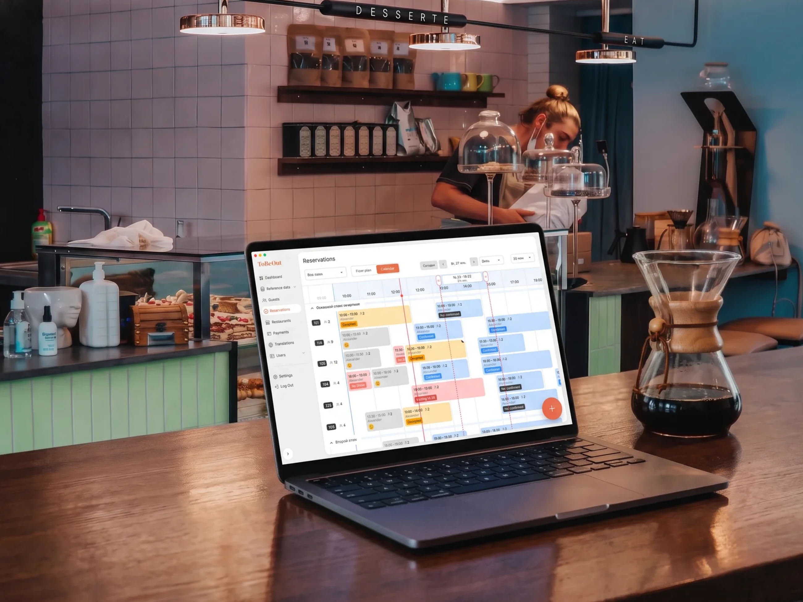
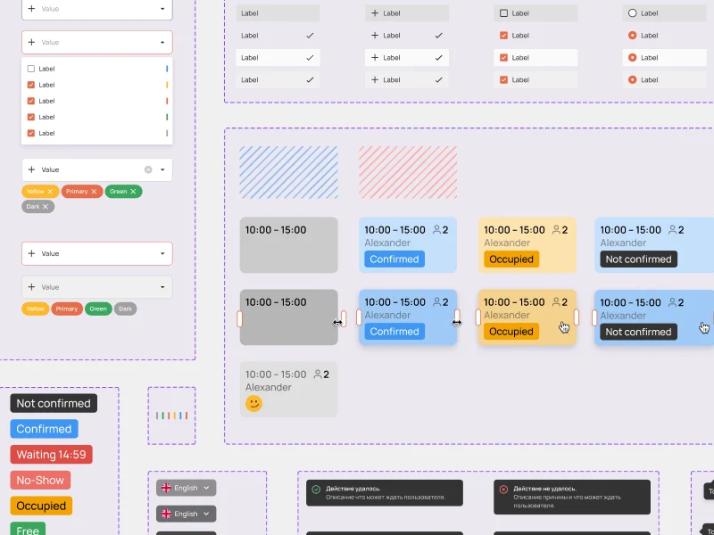
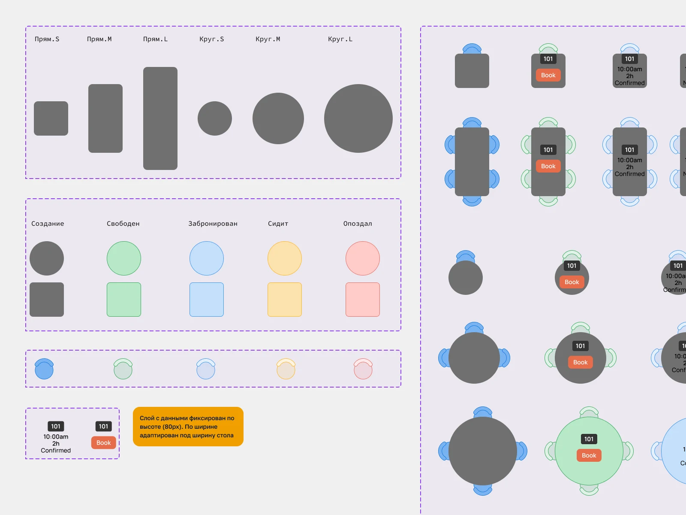
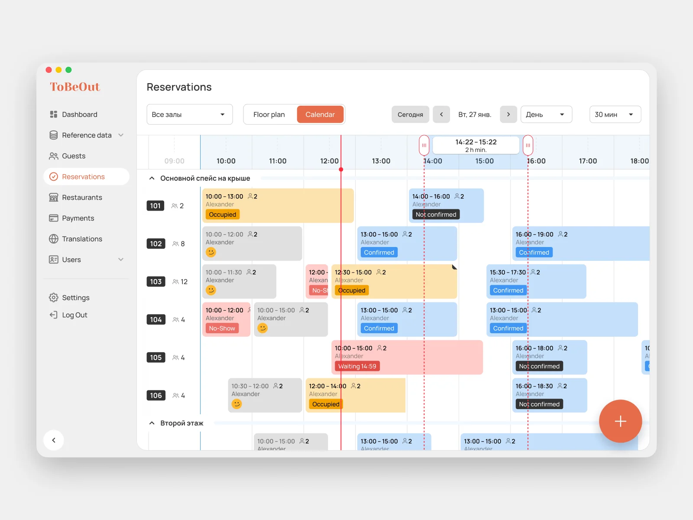
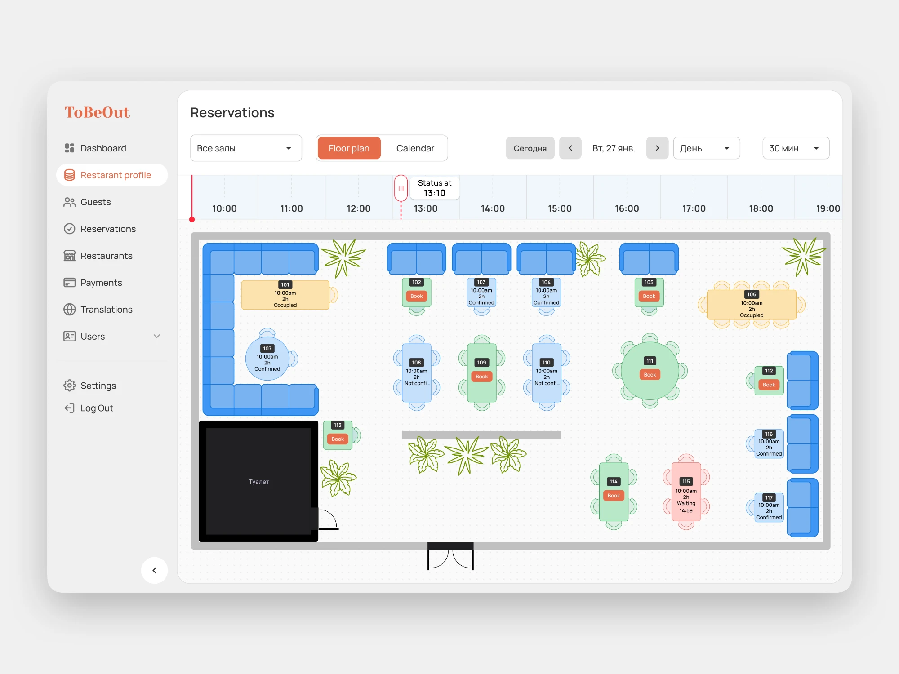
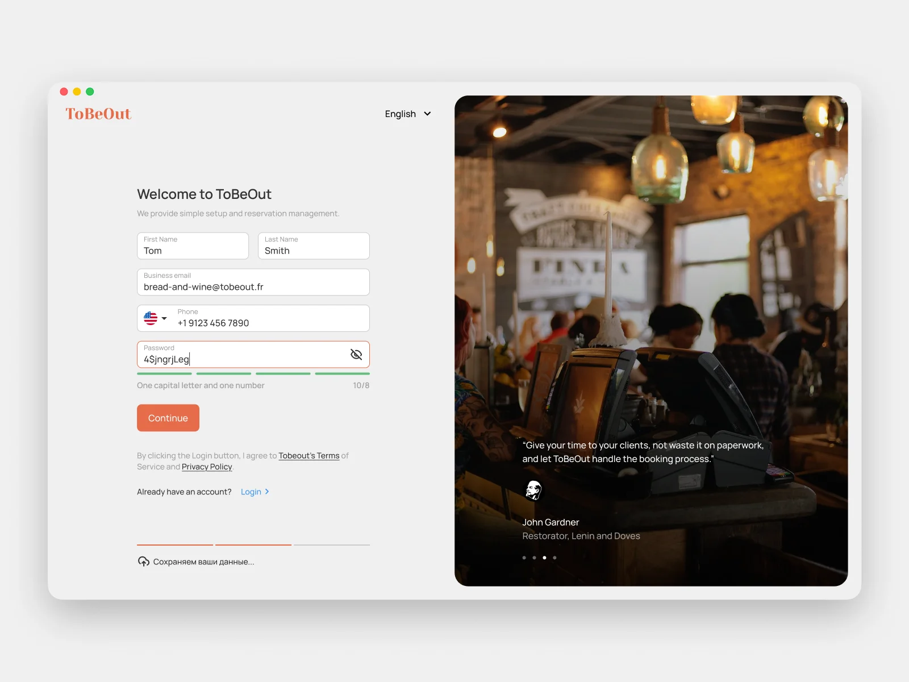
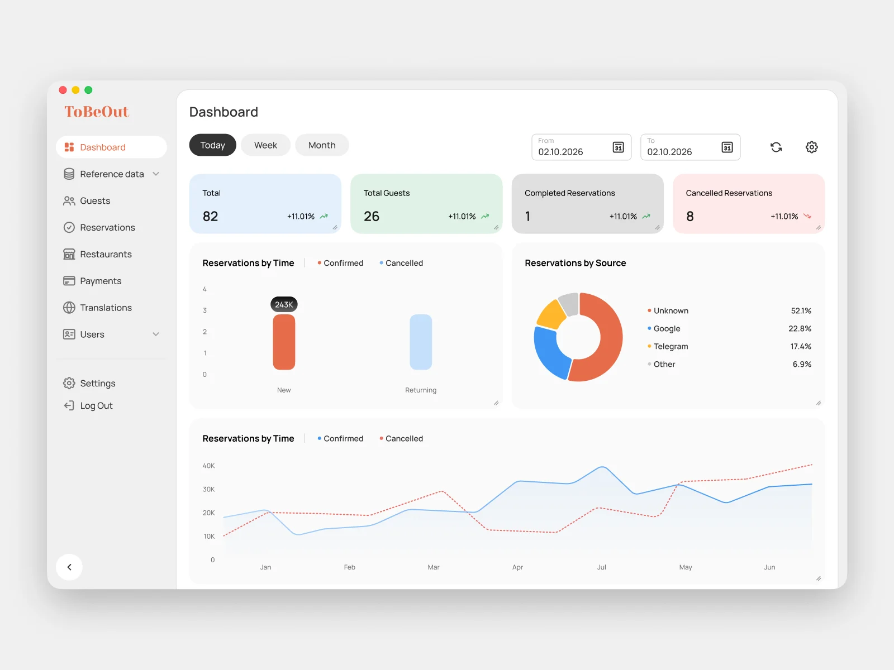

Роль: Product Designer
Зона ответственности: визуальный стиль, дизайн-система, бронирование по календарю и плану зала, регистрация заведения и дашборд.
Этапы: Концепция • Визуальный стиль • Дизайн-система • UX/UI • Delivery
Новый стартап: SaaS для автоматизации заведений. Дизайн продукта сделан с нуля – от визуального языка до сценариев работы в зале. Сейчас проект в разработке.

Сделать современный, удобный и интуитивный SaaS-инструмент для ресторанов. Не переделать существующий, а спроектировать продукт, в котором новый сотрудник разбирается без обучения, а опытный работает быстрее, чем в блокноте.
Начал не с экранов, а с системы. Собрал токены, сетку, типографику и библиотеку компонентов с состояниями: продукт растет быстро, и без общей основы экраны разъехались бы уже на второй итерации. Разработка получила готовый набор, а не набор картинок.


Отталкивался от реальной смены, а не от списка функций: разобрал, из каких действий состоит работа зала, где возникают ожидание и ошибки, и уже под это собирал экраны. Принципы, которые заложил в основу:
Основной сценарий хостес: занятость зала по времени, свободные слоты и быстрая посадка гостя без переключения экранов.

Второй способ той же задачи: гость выбирается на схеме зала – видно, какой стол свободен, где окно, а где проход.

Флоу подключения ресторана к платформе: от заявки до готового к работе аккаунта.

Сводка для управляющего: загрузка зала, брони и ключевые показатели заведения на одном экране.

Дизайн готов, продукт в разработке. Метрики появятся после запуска: скорость оформления брони, время адаптации нового сотрудника, число подключенных заведений.
В рабочих инструментах дизайн оценивается не впечатлением, а числом действий и вероятностью ошибки. Стартап дает редкую возможность заложить это правило в основу, а не чинить потом.